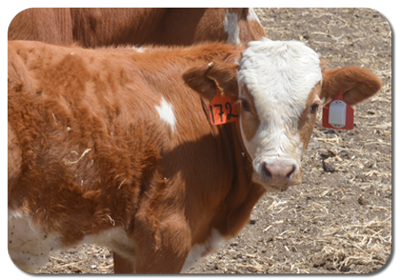

Pakiet Podstawowy
Każde zwierze posiada kolczyk z pasynwym tagiem RFID. Koszt jednego kolczyka to mniej niż 1zł. Kolczyk zawiera podstawowe dane na temat zwierzęcia: wiek, nazwę. Możesz sam zdecydować co jeszcze ma się tam znaleźć. Nasza technologia RFID gwarantuje nawet 50 lat pracy i pełną odporność tagów na warunki atmosferyczne. Kolczyki RFID mają zasięg minium 100 metrów. Jeżeli Twoje zwierzęta posiadają już jakieś tagi RFID, możemy je zastąpić za połowę ceny nowego.
Nasz dron może działać w częściowo niekorzystnych warunkach (deszcz i wiatr). W wypadku skrajnie niekorzysnej pogody, wypuszczenie drona jest ryzykowne. Minimalna temperatura pracy drona to -10 , a maksymalna +40 stopni celsjusza.
Okresowo nad Twoim stadem przelatuje dron wyposażony w minikomputer i zestaw czujników radiowych które znajdują każdy kolczyk RFID i zapamiętują jego położenie dzięki modułowi GPS. Jeżeli Twoje pastwisko posiada zasięg sieci komórkowej, dane od razu wysyłane są do systemu Smart Rolnik i w czasie rzeczywistym możesz obserwować położenie swojego stada na aplikacji mobilnej lub stronie internetowej. W innym wypadku dron po powrocie do bazy wysyła dane przez Wi-Fi kożystając z Twojego domowego internetu. Sam możesz zdecydować jak czesto potrzebujesz skanować swoje pastwisko, możesz również wysłać drona na zwiad, kiedy uznasz to za potrzebne.
Wszystkie dane trzymane są na naszych serwerach w chmurze.
Koszt
Niektóre urządzenia możesz wypożyczyć na okres zamiast od razu kupować na własność.| cena jednostkowa | abonament (wypożyczenie) - miesiąc | |
| Kolczyk RFID | 0,80zł | - |
| Dron | 5000zł | 150zł |
| System SmartRolnik - aplikacja | - | 200zł |
| Utrzymanie bazy danych (koszt na jedno zwierzę) | - | 1zł |